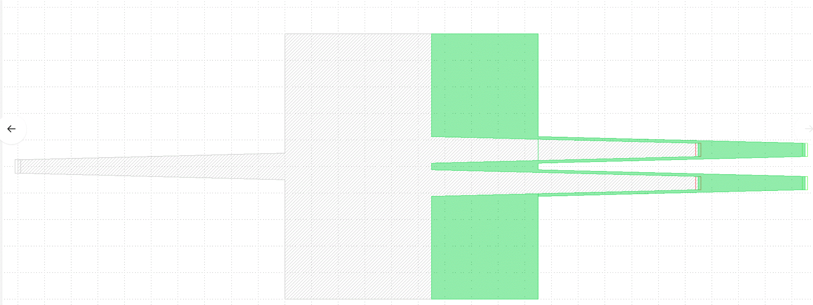

Contributing
Contents
Contributing#
gdsfactory is an open source project that welcomes contributions from any users.
How can you contribute?
You can fork the repo, work on a feature, and then create a Pull Request asking permission to merge your feature into the master branch. As long as the tests pass on GitHub Actions it is likely that your improvement will be included in the next release and benefit the community.
After your improvements the tests with pytest and syntax checker flake8 must be passing.
To help you with code quality checks we install pre-commit hooks to maintain good code quality.
What are the easiest contributions to make?
You can take a look at the open issues or you can also share some of your work:
Any improvements you make (documentation, tutorials or code)
Your layout/verification functions that you wrote recently
A new device that you found on a paper. It will help your work get citations as other people build upon it.
The workflow is:
Fork the repo
git cloneit into your computer and install it (./install.batfor Windows andmake installfor MacOs and Linux)git add,git commit,git pushyour work as many times as needed (make sure tests are passing)open a Pull request (PR)
Style#
You need to follow Google Python Style Guide. You can take a look at the other Pcell docstrings.
You should make sure tests pass.
You should install pre-commit to get the pre-commit checks passing (autoformat the code, run linter …).
Tests#
pytest runs 3 types of tests:
You can run tests with pytest. This will run 3 types of tests:
pytest will test any function that starts with
test_. You can assert the number of polygons, the name, the length of a route or whatever you want.regressions tests: avoids unwanted regressions by storing Components port locations in CSV and metadata in YAML files. You can force to regenerate the reference files running
make test-forcefrom the repo root directory.tests/test_containers.pystores container settings in YAML and port locations in a CSV filetests/components/test_components.pystores all the component settings in YAMLtests/components/test_ports.pystores all port locations in a CSV filetests/test_netlists.pystores all the component netlist in YAML and rebuilds the component from the netlist.converts the routed PIC into YAML and build back into the same PIC from its YAML definition
lytest: writes all components GDS in
run_layoutsand compares them withref_layoutswhen running the test it will do a boolean of the
run_layoutand theref_layoutand raise an error for any significant differences.you can check out any changes in your library with
gf gds diff ref_layouts/bbox.gds run_layouts/bbox.gdsit will also store all differences in
diff_layoutsand you can combine and show them in klayout withmake diff
Testing your own component factories#
As you create your component functions (known as factories because they return objects) I recommend that you also write tests for the all those new functions that you write. See for example the tests in the ubc PDK
Pytest-regressions automatically creates the CSV and YAML files for you, as well gdsfactory.gdsdiff will store the reference GDS in ref_layouts
gdsfactory is not backwards compatible, which means that the package will keep improving and evolving.
To make your work stable you should install a specific version and pin the version in your
requirements.txtasgdsfactory==5.54.0replacing5.54.0by whatever version you end up using.Before you upgrade gdsfactory make sure you write and run regression tests on your work to check that things behave as expected
gdsdiff#
You can use the command line gf gds diff gds1.gds gds2.gds to overlay gds1.gds and gds2.gds files and show them in klayout.
For example, if you changed the mmi1x2 and made it 5um longer by mistake, you could gf gds diff ref_layouts/mmi1x2.gds run_layouts/mmi1x2.gds and see the GDS differences in Klayout.

Why does gdsfactory exists?#
For Photonics IC layout I used IPKISS for 6 years. IPKISS is slow with big layouts, so in 2019 I tried all the commercial (Luceda, Cadence, Synopsis) and open source EDA tools (phidl, gdspy, picwriter, klayout-zero-pdk, nazca) looking for a fast and easy to use workflow.
The metrics for the benchmark were:
Fast
Easy to use and interface with other tools
Maintained / Documented / Popular
PHIDL won in speed, readability and easy of use. It is written on top of gdspy (which came second), so you can still leverage all the work from the gdspy community. Gdsfactory also leverages klayout and gdspy python APIs.
Gdsfactory leverages klayout and gdspy python APIs.
What nice things come from phidl?
functional programming that follow UNIX philosophy
nice API to create and modify Components
Easy definition of paths, cross-sections and extrude them into Components
Easy definition of ports, to connect components. Ports in phidl have name, position, width and orientation (in degrees)
gdsfactory expands phidl ports with layer, port_type (optical, electrical, vertical_te, vertical_tm …) and cross_section
gdsfactory adds renaming ports functions (clockwise, counter_clockwise …)
What nice things come from klayout?
GDS viewer. gdsfactory can send GDS files directly to klayout, you just need to have klayout open
layer colormaps for showing in klayout, matplotlib, trimesh (using the same colors)
fast boolean xor to avoid geometric regressions on Components geometry. Klayout booleans are faster than gdspy ones
basic DRC checks
What functionality does gdsfactory provide you on top phidl/gdspy/klayout?
@cell decoratorfor decorating functions that create componentsautonames Components with a unique name that depends on the input parameters
avoids duplicated names and faster runtime implementing a cache. If you try to call the same component function with the same parameters, you get the component directly from the cache.
automatically adds cell parameters into a
component.info(full,default,changed) as well as any otherinfometadata (polarization,wavelength,test_protocol,simulation_settings…)writes component metadata in YAML including port information (name, position, width, orientation, type, layer)
routing functions where the routes are composed of configurable bends and straight sections (for circuit simulations you want to maintain the route bends and straight settings)
get_route: for single routes between component portsget_route_from_steps: for single routes between ports where we define the steps or bendsget_bundle: for bundles of routes (river routing)get_bundle_path_length_match: for routes that need to keep the same path lengthget_route(auto_widen=True): for routes that expand to wider waveguides to reduce loss and phase errorsget_route(impossible route): for impossible routes it warns you and returns a FlexPath on an error layer to clearly show you the impossible route
testing framework to avoid unwanted regressions
checks geometric GDS changes by making a boolean difference between GDS cells
checks metadata changes, including port location and component settings
large library of photonics and electrical components that you can easily customize to your technology
read components from GDS, numpy, YAML
export components to GDS, YAML or 3D (trimesh, STL …)
export netlist in YAML format
plugins to compute Sparameters using for example Lumerical, meep or tidy3d
gdsfactory is written in python and requires some basic knowledge of python. If you are new to python you can find many free online resources to learn: